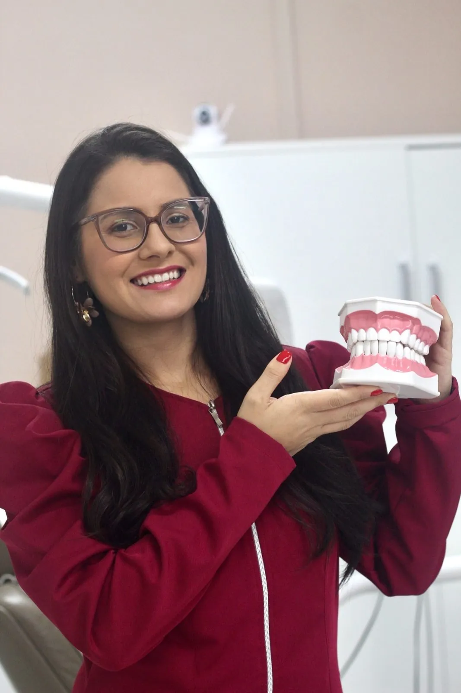
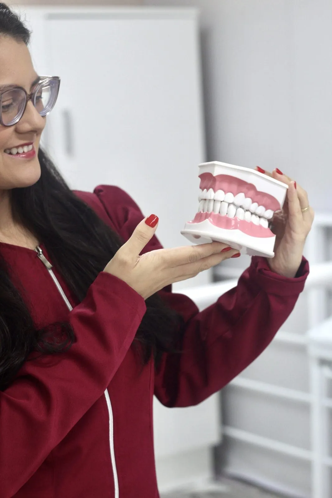
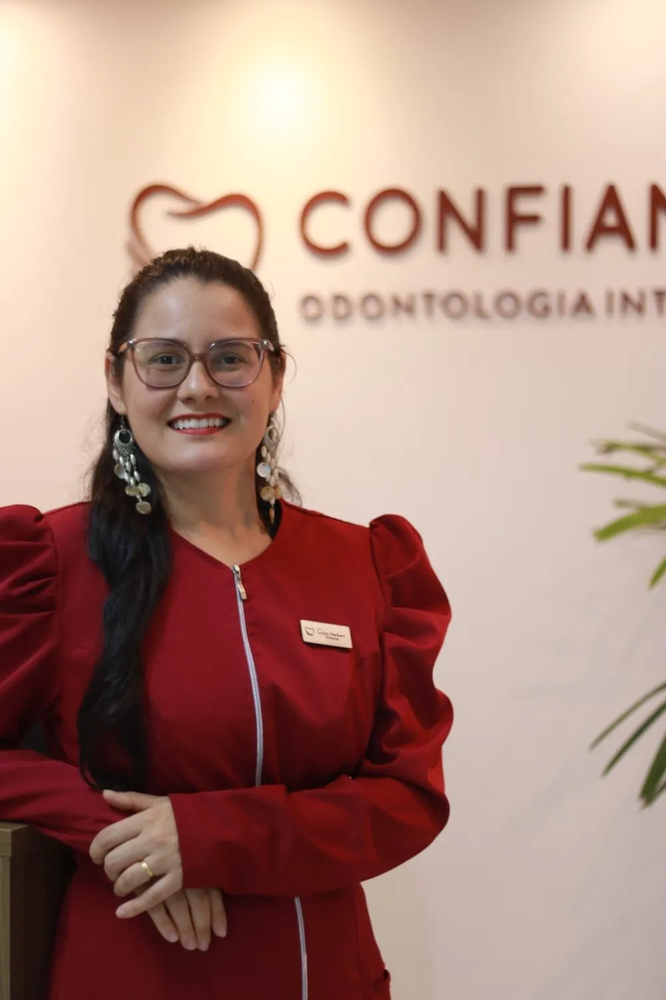
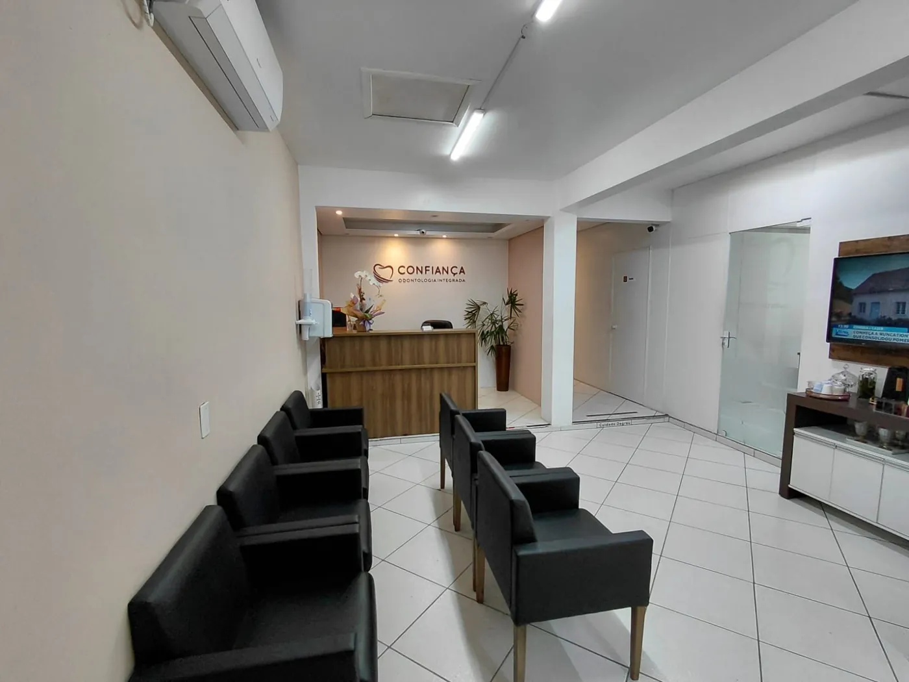

Prótese total (dentadura)
Para quem é: quem perdeu todos os dentes de cima, de baixo ou dos dois.
- Repõe todos os dentes de cima ou de baixo e devolve a mastigação e o sorriso.
- Sem cirurgia.
- É removível: você tira para limpar.
Aqui você entende cada opção antes de decidir. Sem pressão e sem empurrar tratamento.

Está com dor de dente? Fale com a gente agora.
Falar agora pelo WhatsApp sobre dor de denteIsso acontece com muita gente, e não é motivo de vergonha. O primeiro passo é uma conversa sem pressa com a doutora.
Duas soluções sem cirurgia para voltar a mastigar e sorrir. Na avaliação, a doutora mostra qual é a indicada para você.
Para quem é: quem perdeu todos os dentes de cima, de baixo ou dos dois.
Para quem é: quem ainda tem alguns dentes naturais.
Não sabe qual é o seu caso? Tudo bem: a doutora avalia e explica.
Avaliar minha prótese pelo WhatsApp (abre o WhatsApp)Prótese que cai, machuca ou solta quando você fala não é normal. Normalmente é sinal de moldagem malfeita e entrega apressada.
Aqui, cada etapa é feita com calma, e você participa de todas.
Ela examina, escuta o que te incomoda e explica as opções.
O molde é feito para a sua boca, não um tamanho padrão.
Você vê e aprova o formato dos dentes antes da finalização. Se algo não agradar, ajusta.

Um laboratório especializado faz o acabamento.
Depois da entrega, a clínica acompanha e faz os ajustes.

Dra. Luiza Lacerda Hechert
Cirurgiã-dentista · sócia e responsável técnica
CRO-SC 18688
A Dra. Luiza cuida de clínica geral e prótese e lidera os tratamentos da Confiança. O jeito dela é simples: primeiro escutar, depois explicar, e só então indicar o que faz sentido para você.
Implante é um ótimo tratamento quando é o seu caso. Quando não é, a gente fala e mostra as outras opções.
“Sua paciência tornou todo o tratamento muito mais confortável. Altamente recomendado!”
Dra. Rayssa
Cirurgiã-dentista. Atende adultos e crianças.
Vicência
Gerente. É quem cuida do seu agendamento.
Quando é indicado para o seu caso, com toda a explicação antes.
Para tirar a dor e salvar o dente.
Aparelho e alinhadores transparentes.
Limpeza, restaurações e check-up.
“Tinha medo de dentista, mas a doutora sempre explica tudo bem explicadinho e passa literalmente confiança.”
“Já tinha feito avaliação em outra clínica, eu pensei que seria mais uma, mas pra minha surpresa foi o melhor atendimento que já tive. […] Eu estou muito feliz com o meu sorriso, ficou lindo demais.”
“Somos super bem atendida, com muita atenção, carinho, respeito e profissionalismo. Toda a equipe está de parabéns pelo cuidado e dedicação com os pacientes.”
Até 18x sem juros
Cartão, Pix e crédito Viacredi
Avaliação sem custo com a doutora.
Você sai sabendo o que precisa, sem compromisso.
Está pesquisando para alguém da família? Você pode agendar por ele pelo WhatsApp.
No Centro de Blumenau, na mesma rua da Igreja Matriz.
Confiança Odontologia IntegradaR. Padre Jacobs, 127 — sala 2| Segunda a sexta | 8h30 às 18h |
|---|---|
| Sábado e domingo | Fechado |

Mande uma mensagem e agende sua avaliação com a doutora.
Respondemos de segunda a sexta, das 8h30 às 18h.
Mensagens fora do horário são respondidas no próximo dia útil.
Mensagem que vai ser enviada
“Olá! Vim pelo site e gostaria de agendar uma avaliação sobre prótese.”
Ao clicar no botão, o WhatsApp abre com essa mensagem pronta. É só enviar.
Enviar pelo WhatsApp (abre o WhatsApp)